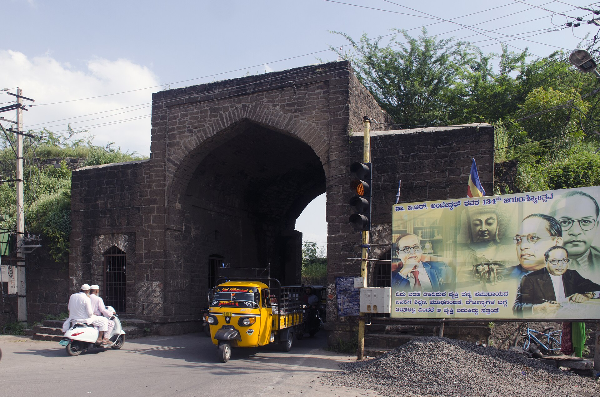
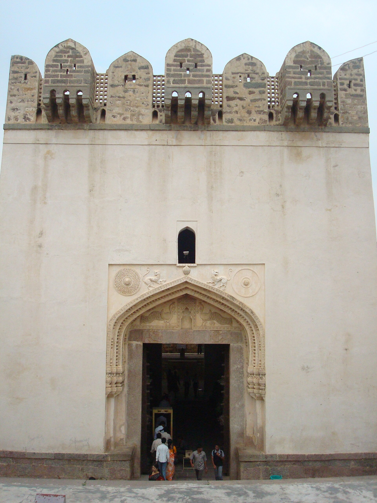
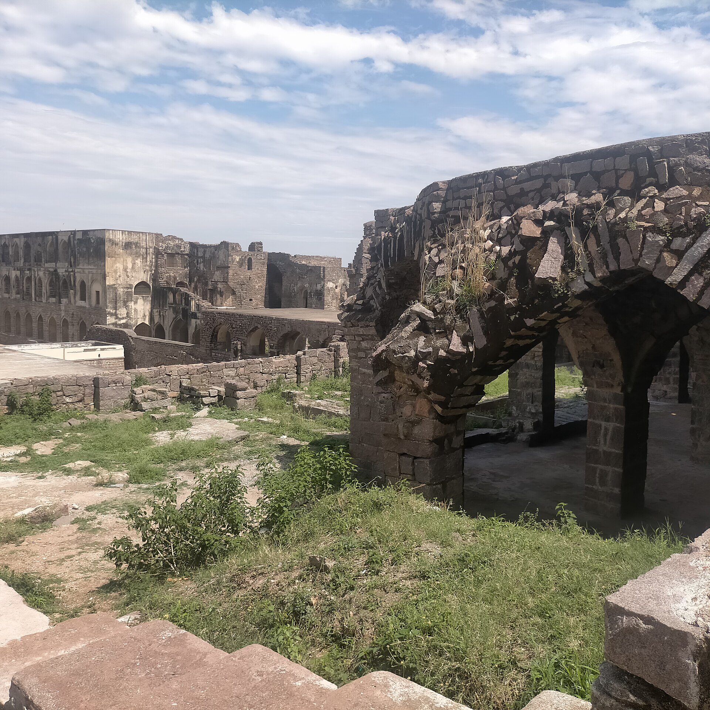
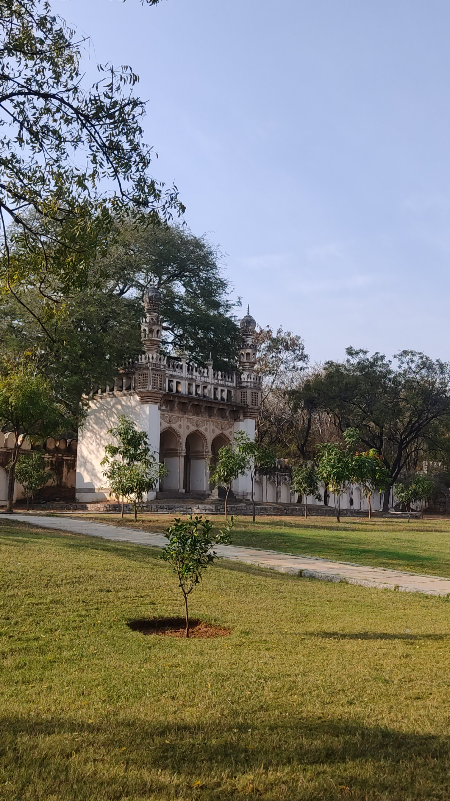
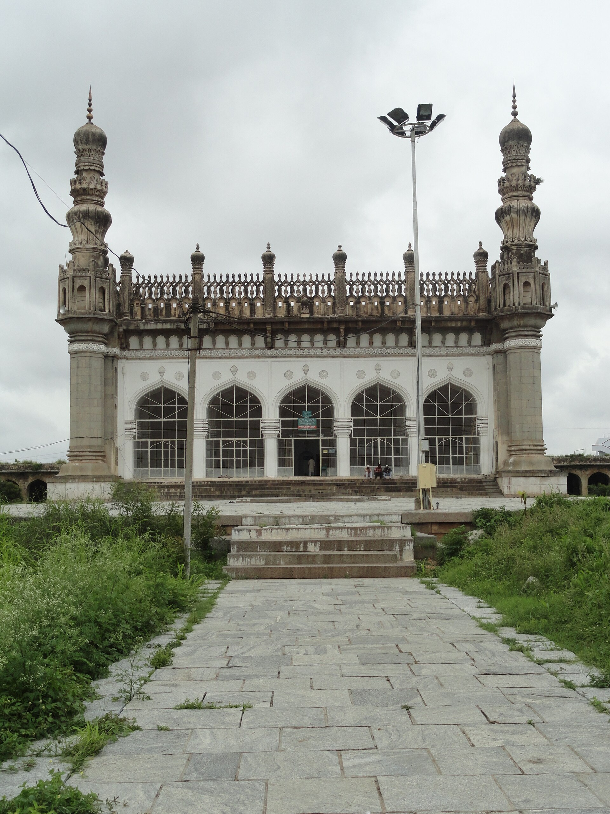
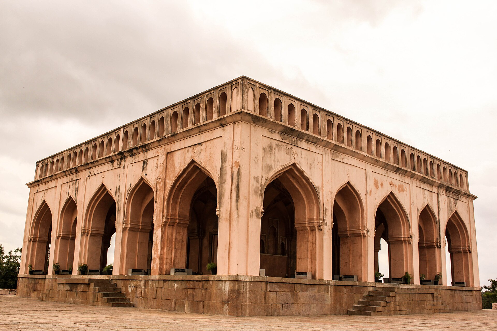
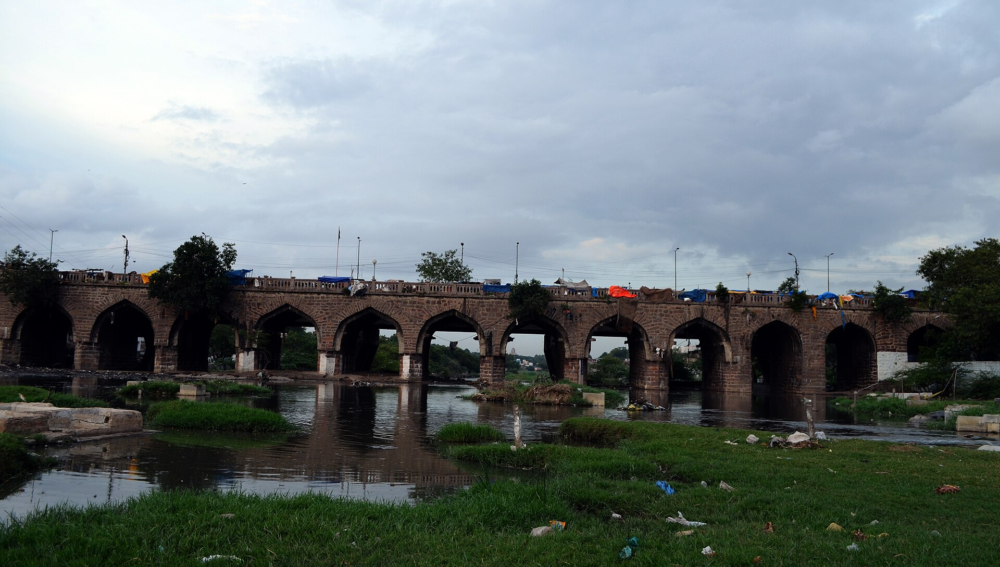

Bala Hisar
16th c.
The summit pavilion, a hundred and twenty metres up — the acoustic terminus of the clap at the Fateh gate, and the highest point of the kingdom's authority.
7 · Golla konda — the shepherd's hill
Qutb Shahi seat from c. 1501 · fell 1687
For two thousand years, until Brazil, every fine diamond in the world came from this region — the Koh-i-Nur, the Hope, the Regent, the Orlov, the Darya-i-Nur. Golconda was the fort that sat on the trade. It took the Mughals eight months, a hundred siege guns, three mines of 37,000 pounds each and finally a bribe to get inside it.
Sultan Quli was born near Hamadan in western Persia, of the Qara Qoyunlu — the Black Sheep Turkomans, who had ruled much of Persia and Iraq until their rivals the Aq Qoyunlu, the White Sheep, destroyed them and killed almost all the men of the clan. His family were on the losing side of that catastrophe.
He reached Delhi at the start of the sixteenth century with his uncle Allah-Quli, moved south to Bidar, took service with the Bahmani sultan, and rose fast — winning the title Qutb-ul-Mulk, pillar of the state, and the government of Telangana with the fortress of Golconda, from around 1501. As the Bahmani state dissolved around him he simply kept governing; he stopped reading the Bahmani khutba, and the formal break is usually dated 1518.
He rebuilt the Kakatiya mud fort into a granite citadel and ruled from it for the better part of half a century, before being murdered at prayer in the mosque on his own son's orders.
The name is explained by a story: a shepherd boy grazing on the rocky hill found an idol there; word reached the Kakatiya king; a mud fort was raised around the sacred spot. Golla konda — shepherd's hill.
Whatever the truth of the boy, the geology is why the fort exists. The hill is a single granite mass rising about a hundred and twenty metres over flat country, visible for miles and defensible from every side. The first three Qutb Shahs spent about sixty-two years wrapping it in granite.
About five kilometres of granite inner fortification, an outer wall of roughly ten, eighty-seven semicircular bastions, eight gateways and four drawbridges. The Fateh Darwaza on the south-east is studded with iron elephant-spikes; the Bala Hisar gate on the east carries carved lions and griffins — Kakatiya iconography absorbed intact into an Islamic fort.
The celebrated trick is acoustic: a hand-clap under the dome at Fateh Darwaza carries to the Bala Hisar pavilion at the summit, almost a kilometre away and a hundred and twenty metres up. It is repeated by every source and studied rigorously by none, but it works.
The real marvel is water. Rain and reservoir water was caught in rock-cut cisterns, moved through earthenware pipes set into the masonry, and lifted by a chain of Persian wheels from the lower tanks into overhead ones — then distributed downhill by gravity to palaces, roof gardens and fountains at the top of the hill. Tradition says a concealed line drew from Durgam Cheruvu, the 'secret lake' ten kilometres away, chosen because it was nearly unreachable and therefore hard to poison. The water pits doubled as mirrors and as evaporative cooling in summer.
Until Brazil in the 1720s, India was effectively the world's only source of fine diamonds, and the Krishna valley was India's. The historic output of the Golconda field is estimated at around ten million carats — about two tonnes — from some twenty-three working mines.
The greatest was Kollur, on the south bank of the Krishna some two hundred kilometres south-east of the fort: alluvial workings a kilometre and a half long, discovered around 1619 and exhausted by about 1830. William Methwold in 1621 found twenty to thirty thousand people there; at peak the workings held sixty thousand men, women and children, in a settlement of perhaps a hundred thousand. Unshored pit walls collapsed after heavy rain and killed dozens at a time, and many workers were paid in food rather than money.
The state's cut was simple and devastating: two per cent of all sales, and every stone above ten carats reserved to the crown. That single rule converted a vast labour-intensive industry directly into royal treasure, and it is why 'Golconda' became a synonym in English for an inexhaustible source of wealth.
Jean-Baptiste Tavernier, a French gem merchant, made six voyages to India between 1631 and 1668 and left the densest surviving account of the mines and the court gems. He saw the Great Mogul diamond in Aurangzeb's treasury in 1665 and thought it like half of a pigeon's egg. He bought a blue stone of 112 carats that he described as a beautiful violet, and sold it to Louis XIV; recut as the French Blue, stolen in 1792 and recut again, it is now the Hope Diamond.
| Koh-i-Nur | Now 105.6 ct — cut down from 186, itself from 793 |
| Hope | 45.52 ct, Smithsonian — once Tavernier's violet stone |
| Regent / Pitt | Found at Kollur c. 1698–1701; the Louvre |
| Orlov | Kremlin Armoury |
| Darya-i-Nur, Noor-ol-Ain | Iranian crown jewels |
| Princie, 34.65 ct pink | Once the Nizams'; sold 2013 for US$39.3 m |
| Lost | The Florentine, the Akbar Shah, the Great Mogul — and the Nizam Diamond, missing from Hyderabad after 1948 |
Diamonds are the story, but land tax was the base revenue, and Masulipatnam on the Coromandel coast was the kingdom's ocean gate — for stones and, more steadily, for painted cotton.
Methwold reported traders tripling their investment selling Masulipatnam cloth at Bantam and doubling it at Siam. The kingdom's financial peak was the 1620s and 1630s.
By Abul Hasan's time one tradition claimed a treasury of fifty crores and five lakhs of hons, which is chronicle hyperbole — but the figures the Mughals actually recorded carrying away in 1687 are large enough to make the point.
Aurangzeb's demands included territory, a lump sum, and the dismissal of Golconda's Brahmin ministers Madanna and Akkanna — whom the kingdom's own nobles then assassinated in March 1686, which did not save it.
The siege ran from 28 January to 21 September 1687. The Mughals brought around fifty thousand infantry, a comparable cavalry and about a hundred siege guns, including one throwing a 33-kilogram shot. Three mines were driven under the walls, each packed with thirty-seven thousand pounds of powder; the first two backfired, each killing more than a thousand Mughal soldiers. Golconda's counter-battery fire killed one of the emperor's veteran commanders.
None of it worked. What worked was money: on 21 September a Golconda noble opened a postern. The sources cannot agree whether he was Abdullah Khan Panni or Sarandaz Khan.
Abul Hasan Tana Shah met the end better than anyone else in this history. He went into his harem to take leave, came out, sat on his throne, ordered breakfast served as the imperial troops entered, greeted their commander courteously, and rode out to lifelong imprisonment at Daulatabad, where he died in 1699.
Golconda's general refused every Mughal offer, tearing up the emperor's letter in front of his men, and when the gate was opened he charged alone into the victorious army.
He was found next morning under a coconut tree with something like seventy wounds and one eye destroyed. Aurangzeb sent his own surgeons and, by report, said that if Abul Hasan had had one more servant like him the fortress would have taken far longer.
Offered rank and pardon on recovery, he refused while his master lived a prisoner: no one who had eaten Abul Hasan's salt, he said, could serve the man who had destroyed him. He took service only a year later.
Hyderabad says that one night's escalade failed because a dog began barking on the rampart and woke the garrison, and that the dog was afterwards kept on a gold chain.
It is told everywhere locally and appears in none of the standard sources. Enjoy it accordingly.
The most persistent legend in Hyderabad is a secret passage running the eleven kilometres from Golconda to the Charminar, patrolled by mounted soldiers, built as a royal escape route.
The Archaeological Survey excavated in 2019 and the trail died within a short distance. The historian Mohammed Safiullah puts it plainly: this is plateau country, and a tunnel of that length is not buildable here.
Old chambers and cellars keep turning up, which keeps the story alive. A related treasure hunt near the state secretariat in 2012, chasing rumoured jewels worth twenty thousand crore in a tunnel under a school, found nothing.
“The jewellers sell publicly in the bazaars pearls, rubies, emeralds and diamonds.”Abdur Razzaq, of a Deccan bazaar — a sentence only this region could produce
The granite hill with its ring of walls, the necropolis in its garden a kilometre north-west outside the Banjara gate, and the diamond country far to the south-east — off this plan, two hundred kilometres away on the Krishna.
16th c.
The summit pavilion, a hundred and twenty metres up — the acoustic terminus of the clap at the Fateh gate, and the highest point of the kingdom's authority.

16th c.
The Victory Gate on the south-east, studded with iron spikes at elephant-head height. Clap under its dome and the sound reaches the summit almost a kilometre away.

16th c.
The main eastern entrance, its arch carved with lions and griffins — Kakatiya iconography left standing inside a Qutb Shahi fort.

1518
Sultan Quli's mosque on the ascent — by tradition the place where he was cut down at prayer in 1543, on the orders of his own son.
16th–17th c.
Where the diamond trade was regulated: two per cent of every sale to the crown, and every stone over ten carats surrendered to it.
16th c.
Rock-cut cisterns, clay pipes set into the masonry, and a chain of Persian wheels lifting water to overhead tanks — which is how there were fountains and roof gardens on top of a bare granite hill.

1543–1672
Seven royal domes on black basalt in a walled garden of the dead, outside the Banjara gate. They were once faced in blue and green tile; a few pieces remain.

16th c.
Inside the necropolis: the hammam where the kings were washed before burial, called one of the finest surviving specimens of its kind anywhere.

1666
Fifteen cupolas and twin minarets, built for the dynasty's great dowager — daughter, wife and mother of sultans, and effectively its regent.

17th c.
A twelve-arched pavilion on a hillock west of the city. Legend says the courtesan Taramati sang here and Abdullah Qutb Shah heard her two kilometres away at the fort; she is at least genuinely buried in the royal necropolis.

1578
Twenty-two granite arches across the Musi, six hundred feet long — the first bridge, built before the new city existed, and in 1908 the only one left standing.